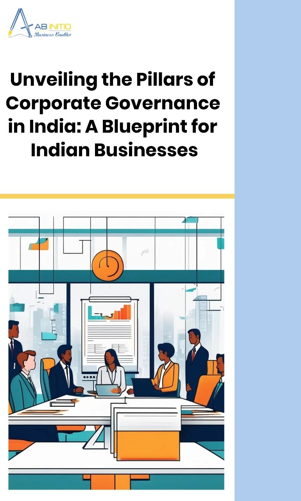

Corporate governance, the bedrock of a company’s ethical and responsible conduct, is paramount for India’s business landscape. This comprehensive guide delves into the intricate facets of corporate governance, exploring the challenges, mechanisms, and regulatory framework that shape its contours. From ensuring executive accountability and addressing ethical dilemmas to fortifying internal controls and understanding the legal landscape, this article provides a roadmap for Indian businesses to establish robust governance practices. By understanding the critical components of corporate governance, businesses can build trust, mitigate risks, and achieve long-term sustainability.
Strengthening Accountability and Transparency
The Enron, WorldCom, and Parmalat scandals exposed a critical weakness in corporate governance: a lack of accountability for executives. When leaders face no consequences for misconduct, it breeds an environment ripe for ethical lapses and financial malfeasance. This section of the guide explores how robust corporate governance mechanisms can ensure executives are held responsible for their actions, fostering a more ethical and trustworthy business landscape.
- Ethical Challenges Associated with Corporate Governance
Corporate governance faces several ethical challenges that can compromise the effectiveness and integrity of business operations. The key areas of concern are:
- Performance Evaluation of Directors: This is crucial for identifying areas of improvement and ensuring the board’s effective functioning. However, it must be transparent and objective.
Example: In 2018, SEBI directed listed companies to disclose the criteria for evaluating the performance of independent directors.
- Missing Independence of Directors: Independence is often compromised due to close associations with promoters or management.
Example: In 2018, the ICICI Bank controversy arose when it was alleged that the bank’s CEO, Chanda Kochhar, had approved a loan to Videocon Industries in exchange for a quid pro quo deal involving her husband, Deepak Kochhar. An investigation revealed financial dealings between Deepak Kochhar and Videocon Group promoter Venugopal Dhoot, where Dhoot’s company, Supreme Energy, extended a significant loan to a company co-owned by Deepak Kochhar. This raised serious concerns about conflict of interest and propriety, as the loan to Videocon Industries was sanctioned while Chanda Kochhar was part of the bank’s credit committee. The allegations led to an independent probe by ICICI Bank’s board and scrutiny from regulatory bodies, highlighting how close associations with promoters or management can severely compromise the independence of directors and undermine corporate governance.
- Liability Toward Stakeholders: Companies often prioritize the interests of promoters or management over stakeholders.
Example: The IL&FS crisis in 2019 occurred due to the company’s mismanagement and failure to meet its financial obligations. IL&FS Financial Services fell short of cash and defaulted on several of its obligations, including bank loans and commercial paper redemption. The defaults exposed severe lapses in governance, such as cost overruns in ongoing projects and delays in land acquisition and approvals. This crisis jeopardized the investments of numerous stakeholders, including banks, mutual funds, and equity investors, highlighting how the company’s prioritization of internal interests over stakeholder obligations led to significant financial turmoil and a loss of trust in corporate governance practices.
- Founder/Promoter’s Extensive Role: While beneficial for vision and leadership, the extensive role of founders or promoters can lead to conflicts of interest and lack of transparency.
Example: In 2019, SEBI directed companies to disclose the reasons for appointing the founder or promoter as the chairman of the board.
- Transparency and Data Protection: Companies must ensure the protection of sensitive data and information.
Corporate entities can protect their sensitive information/data in several ways, as outlined by the various cybersecurity regulations and guidelines in India:
- Implement Reasonable Security Practices and Procedures – Under Section 43A of the IT Act, businesses must adopt “reasonable security practices and procedures” to protect sensitive information. This involves implementing robust security measures such as encryption, access controls, and regular security audits.
- Compliance with IT Rules, 2011 – Follow the IT (Reasonable Security Practices and Procedures and Sensitive Personal Data or Information) Rules, 2011, which include provisions for the regulation of intermediaries, updated penalties for cybercrime, and requirements for data protection, retention, and processing.
- Adopt International Security Standards (ISO/IEC 27001) – The Indian SPDI Rules, 2011, identify IS/ISO/IEC 27001 regulations as international standards. Although not mandatory, companies are highly advised to implement these standards to ensure reasonable security practices.
- Regular Reporting and Incident Management – Report cybersecurity incidents to CERT-In as required by the IT Act 2008. Establish procedures for prompt detection and reporting of security incidents, including data breaches.
- KYC Compliance – Implement KYC processes to verify and monitor customer identities, using methods such as biometric verification, AI-based technology, and maintaining a customer database for verification purposes.
- Cyber Crisis Management Plans – Develop and present cyber crisis management plans, as mandated by the RBI Act of 2018. These plans should outline procedures for responding to cyber incidents and breaches.
- Corporate-Approved Information Security Policies – Ensure that information security policies are approved by the board and outline cybersecurity preparedness. These policies should cover data protection measures, employee training, and compliance with relevant regulations.
- Mandatory Breach Notifications – Implement procedures for mandatory breach notifications. UCBs, for example, must detect and report cybersecurity incidents to RBI within 2-6 hours of discovery.
- Data Protection Measures under DPDP Act, 2023:
- Appoint third-party data processors who comply with DPDP procedures.
- Ensure personal data is complete and accurate before use or transfer.
- Implement organizational measures and technical protocols for compliance.
- Conduct regular security audits and implement reasonable safeguards to prevent data breaches.
- Notify affected data principals and the Data Protection Board of any known data breaches.
- Erase and destroy personal data upon withdrawal of consent unless legally required to retain it.
- Training and Awareness – Provide regular training and awareness programs for employees to ensure they understand the importance of data protection and the company’s security policies and procedures.
By adhering to these practices and regulations, corporate entities can significantly enhance and better protect their sensitive information and data. Ultimately, strengthening their corporate governance structure.
- Business Structure and Internal Conflicts: Clear and well-defined business structures are essential to avoid conflicts of interest.
To achieve a clear and well-defined business structure, companies should create an organizational chart to visually delineate roles and reporting lines, ensuring every employee understands their position.
- Clearly define roles and responsibilities to prevent confusion and conflicts, and establish clear lines of authority with a specified decision-making hierarchy.
- Implement robust communication channels and provide training to prevent miscommunication.
- Promote accountability through clear role expectations, performance metrics, and regular evaluations.
- Enhance operational efficiency by streamlining processes, minimizing redundancies, and leveraging technology.
- Support employee development with clear career paths and training programs.
- Develop conflict resolution mechanisms with predefined grievance procedures and trained managers.
- Plan for scalability to accommodate growth without disrupting operations.
- Enhance decision-making processes by defining responsibilities and ensuring access to relevant information.
- Facilitate innovation by encouraging creativity and establishing systems for idea submission and development.
- Manage change effectively with predefined processes and clear communication to support employees during transitions.
Companies should also emphasize key clauses that ensure clarity, accountability, and efficiency.
- The Roles and Responsibilities Clause should specify duties, expectations, and performance metrics for each role.
- The Lines of Authority Clause must define the reporting hierarchy and decision-making authority.
- A Communication Clause should establish official channels and procedures for information sharing.
- The Accountability Clause must embed measures for performance and outline consequences for non-compliance.
- The Conflict Resolution Clause should detail procedures and escalation pathways for managing disputes.
- A Scalability Clause needs to address how the structure adapts to growth and the process for adding new roles.
- The Decision-Making Clause should clarify decision responsibilities and streamline the approval process.
- The Innovation Clause should encourage creativity and provide systems for idea submission.
- Finally, the Change Management Clause must establish procedures for managing change and supporting employees during transitions.
By implementing these steps and emphasizing the relevant clauses, companies can establish a well-defined organizational structure that promotes efficiency, accountability, and growth. This structured approach not only supports day-to-day operations but also aligns with long-term strategic goals, driving sustained business success.
Example: In 2019, the dispute between IndiGo promoters Rakesh Gangwal and Rahul Bhatia raises significant legal questions regarding governance and compliance. Key issues include the legality of Related Party Transactions (RPTs), the fairness of the shareholders’ agreement granting unusual control to Bhatia, and whether the appointment of independent directors meets regulatory standards. Additionally, there were concerns about Sebi’s role in investigating these allegations and the legal process for calling an Extraordinary General Meeting (EGM) to address governance issues. These questions highlight the complexities of corporate governance and the need for regulatory oversight.
- Weak Board: Lack of diversity of experience and background represents a major area of weakness.
A well-designed board of directors is a powerful asset for any private business, aiding in long-term strategy development, senior management selection, and providing guidance on critical issues. Here are eight ways to build a better board:
- Appoint the Right Mix of Board Members: Include senior management, family representatives, and independent members from related or unrelated industries to bring diverse perspectives.
- Clarify Roles and Responsibilities: Clearly define the qualifications and duties of board members to prevent conflicts and ensure everyone understands their role.
- Optimize Meeting Agendas: Organize agendas to prioritize approval items and balance the information presented to keep meetings productive.
- Leverage the Chairman’s Role: Ensure the chairman manages personalities, steers conflicts towards consensus, and ensures thorough discussion of agenda items.
- Delegate Responsibilities: Use individual members or committees with specialized expertise to handle follow-up tasks, enhancing efficiency.
- Expose Management to the Board: Allow junior team members to present to the board, facilitating their understanding of board priorities and grooming future leaders.
- Socialize Before Meetings: Encourage informal gatherings before meetings to build rapport and diffuse potential conflicts.
- Leverage Board Connections: Utilize the board members’ networks for consulting needs or finding senior management candidates.
By strengthening the board with these strategies, companies can enhance corporate governance, ensuring more effective oversight, strategic guidance, and a robust framework for decision-making.
- Insider Trading: This occurs when corporate insiders use confidential information to make personal profits. The problem arises because SEBI lacks a robust investigative mechanism and a vigilant approach, enabling culprits to escape.
- Mechanisms for Accountability
- Strong Boards: A well-constructed board of directors plays a vital role. Boards with a majority of independent directors, free from conflicts of interest with management, can provide effective oversight and hold management accountable. Diverse boards with a range of expertise can bring valuable perspectives to the table.
- Clear Roles & Responsibilities: Clear delineation of roles and responsibilities within the organization prevents overlap and confusion. Each member understands their duties and is accountable for their actions.
- Regular Audits & Evaluations: Regular audits scrutinize financial statements and ensure the information reaching stakeholders is reliable. Performance evaluations assess managerial decisions and identify areas for improvement.
- Transparent Reporting: Timely and transparent reporting on a company’s performance, risks, and opportunities empowers stakeholders to make informed decisions. This includes clear communication regarding financial statements, risk assessments, and executive compensation.
- Stakeholder Engagement: Open communication channels with shareholders, creditors, employees, and other stakeholders foster trust and transparency. This can involve regular meetings, question-and-answer sessions, and responsiveness to stakeholder concerns.
By addressing these ethical challenges and implementing strong mechanisms for accountability, companies can enhance their corporate governance practices, build trust with stakeholders, and pave the way for sustainable growth and success. In conclusion, effective corporate governance hinges on holding executives accountable. By implementing robust accountability mechanisms, fostering strong board structures, and prioritizing stakeholder engagement, companies can create a more ethical and trustworthy environment that benefits all stakeholders. This, in turn, leads to a more stable and prosperous business landscape.
Fortifying Internal and External Controls
Maintaining trust and transparency is paramount for any business. But how do companies ensure their financial practices are above board? Enter internal controls and external mechanisms – safeguards that work together to prevent fraudulent activities and hold companies accountable.
- Internal Controls “The First Line of Defense”: Imagine a company’s financial operations as a well-guarded castle. Internal controls are like the loyal guards who constantly patrol the grounds. These controls, which include audits and compliance programs, act as a system of checks and balances. They meticulously examine financial statements, searching for inconsistencies or misleading information. By identifying these red flags early on, internal controls can prevent fraud before it happens, safeguarding the company’s financial integrity.
- External Mechanisms “Enforcing the Rules”: Not every threat comes from within the castle walls. External mechanisms, acting as the watchful eye beyond the castle, provide another layer of security. These mechanisms include regulatory bodies that enforce legal and regulatory compliance. Just like the king who sets the law of the land, regulatory bodies establish standards of good governance that companies must adhere to. By holding companies accountable to these standards, external mechanisms ensure that businesses operate ethically and transparently.
- The Market “A Powerful Incentive”: Imagine a bustling marketplace where companies compete for dominance. The market for corporate control plays a crucial role in promoting good governance. In this marketplace, the threat of takeovers acts as a powerful incentive for managers to perform well. Companies with poor financial practices risk losing control to more efficient competitors. This constant pressure keeps managers aligned with shareholder interests, ultimately preventing them from engaging in misconduct that could jeopardize the company’s success.
- Independent Auditors “Adding Credibility”: Financial statements are a company’s report card, revealing its financial health. But how can shareholders be sure the information presented is accurate? This is where external auditors come in. Acting as independent reviewers, they provide an objective assessment of a company’s financial statements. In the case Govt. of India vs. S.N. Das Gupta, it was held that the independent agency such as the auditor is practically the only safeguard which the shareholders have against the company. Their meticulous examination enhances the credibility and reliability of the information, giving shareholders greater confidence in the company’s financial standing.
By working together, internal controls and external mechanisms create a robust system of safeguards. These safeguards not only prevent fraudulent activities but also foster a culture of transparency and accountability within the business world. This, in turn, builds trust with stakeholders and paves the way for sustainable growth and success.
Reduction in Information Asymmetry
Information asymmetry, a situation where one party has more or better information than the other, is a major challenge in corporate governance. When management possesses vital details not readily available to shareholders and stakeholders, it can hinder informed decision-making, breed mistrust, and expose the company to risk.
Here’s how STRONG corporate governance mechanisms can work to reduce information asymmetry:
- Enhanced Transparency: Regular disclosure of financial and operational information is crucial. Timely reporting on a company’s performance, risks, and opportunities empowers stakeholders to make well-informed decisions. This includes clear communication regarding financial statements, risk assessments, and executive compensation.
- Strong Board Composition: A well-constructed board of directors plays a vital role. Boards with a majority of independent directors, those without conflicts of interest with management, can provide effective oversight and hold management accountable. Diverse boards with a range of expertise can also bring valuable perspectives to the table.
- It’s crucial to ensure that independent directors are not removed for raising concerns or dissenting opinions.
Example: In 2018, the board of Fortis Healthcare removed an independent director after he raised concerns over the company’s acquisition by IHH Healthcare.
- The selection of board members and their term is highly misused in Indian corporate governance. The term should be long enough to ensure stability but not so long that they become complacent.
Example: The Tata-Mistry fallout in 2016 was due to disagreements over the appointment of independent directors.
- Effective Internal Controls: Implementing strong internal controls ensures the accuracy and completeness of financial reporting. This includes measures to safeguard against fraud and errors, ensuring the information reaching stakeholders is reliable.
- Auditor Independence: Independent and qualified auditors play a critical role. They scrutinize financial statements and provide assurance to stakeholders regarding their accuracy. Maintaining auditor independence is essential to prevent conflicts of interest and ensure objective assessments.
- Stakeholder Engagement: Open communication channels with shareholders, creditors, employees, and other stakeholders foster trust and transparency. This can involve regular meetings, question-and-answer sessions, and responsiveness to stakeholder concerns.
- Benefits of Reduced Information Asymmetry:
- Improved Decision-Making: When all stakeholders have access to the same information, they can make more informed choices. Shareholders can assess investment opportunities more effectively, and management can make strategic decisions with a clearer understanding of stakeholder perspectives.
- Increased Trust: Transparency builds trust between management and stakeholders. When stakeholders believe they are receiving accurate and complete information, they are more likely to be confident in the company’s leadership and future prospects.
- Reduced Risk: By mitigating information asymmetry, companies can minimize the risk of fraud, misconduct, and reputational damage. Stakeholders with a clear understanding of the company’s operations are better equipped to identify and report potential issues.
- Enhanced Market Efficiency: A more transparent market is a more efficient one. Investors with access to reliable information can make informed investment decisions, leading to a fairer and more stable market environment.
Therefore, addressing information asymmetry is fundamental to effective corporate governance. By implementing robust transparency measures, fostering strong board structures, and prioritizing stakeholder engagement, companies can create a more informed and trustworthy environment that benefits all stakeholders.
The Legal and Regulatory Framework
India has established a comprehensive framework of laws and regulations to ensure responsible management and control of companies. These regulations aim to protect the interests of stakeholders, promote ethical business practices, and foster a transparent and accountable business environment.
- Cornerstones of Corporate Governance
The Companies Act, 2013, serves as the foundation for corporate governance in India. It outlines the roles and responsibilities of boards of directors, mandates specific committees for crucial functions like auditing and nominations, and sets disclosure requirements for financial reporting. The Act emphasizes regular board meetings and shareholder engagement through Annual General Meetings (AGMs).
- SEBI: Championing Good Governance
The Securities and Exchange Board of India (SEBI) plays a key role in shaping corporate governance practices, particularly for listed companies. SEBI’s regulations address various aspects, including:
- SEBI (ICDR) Regulations, 2009: These ensure transparency and investor protection during public issuances of securities.
- SEBI (Listing Obligations and Disclosure Requirements) Regulations, 2015: These regulations focus on good governance practices like board composition, independent directors, and timely financial disclosures.
- SEBI (Prohibition of Insider Trading) Regulations, 2015: These regulations safeguard market integrity by prohibiting insider trading based on non-public information.
A landmark case that underscores SEBI’s role in enforcing good governance is SEBI v. Sahara. The Sahara case involved a long-standing dispute between SEBI and the Sahara Group regarding the issuance of optionally fully convertible debentures (OFCDs). The Supreme Court emphasized the importance of protecting investors’ interests and ensuring compliance with securities laws. This judgment had significant implications for corporate fundraising practices, highlighting the necessity for transparency and adherence to regulatory frameworks.
Through these regulations, SEBI continues to uphold its mission of fostering a fair, transparent, and efficient securities market, reinforcing good governance, and protecting investors’ interests.
- Additional Pillars of Governance
- Standard Listing Agreement of Stock Exchanges: This agreement outlines specific governance provisions for listed companies, including board composition, audit committees, and disclosure requirements.
- The Institute of Chartered Accountants of India (ICAI): Accounting standards established by ICAI ensure financial statements provide a fair and accurate view of a company’s financial health.
- Recent Reforms for a More Efficient Ecosystem
The Indian government is constantly striving to improve the corporate governance landscape. Here are some key initiatives:
- CII Corporate Governance Charter for Startups: The Confederation of Indian Industry (CII) has launched a corporate governance charter specifically for startups. This charter provides tailored suggestions and guidelines suitable for different stages of a startup, aiming to enhance governance practices.
- C-PACE: This initiative expedites approvals for companies seeking voluntary closure.
- Faster Merger Approvals: Amendments to existing rules empower Regional Directors to facilitate quicker merger approvals.
- Competition (Amendment) Act, 2023: This Act introduces stricter regulations on anti-competitive practices.
- Enhanced Disclosure Requirements: Amendments to accounting standards require greater transparency in financial reporting.
India’s robust corporate governance framework fosters trust and transparency within the business environment. By adhering to these regulations, companies not only comply with legal requirements but also build strong reputations, mitigate risks, and pave the way for sustainable growth.
Conclusion
Effective corporate governance is pivotal for sustainable business growth and stakeholder trust. By prioritizing accountability, addressing ethical challenges, fortifying internal and external controls, and understanding the legal framework, businesses can create a robust governance structure. To ensure optimal implementation, seeking guidance from legal experts or corporate governance consultants is recommended. By embracing these principles and best practices, Indian companies can enhance their reputation, mitigate risks, and contribute meaningfully to the nation’s economic development.